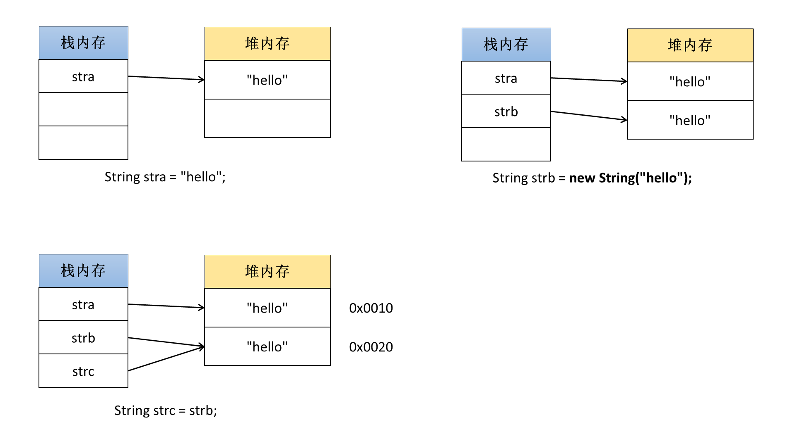
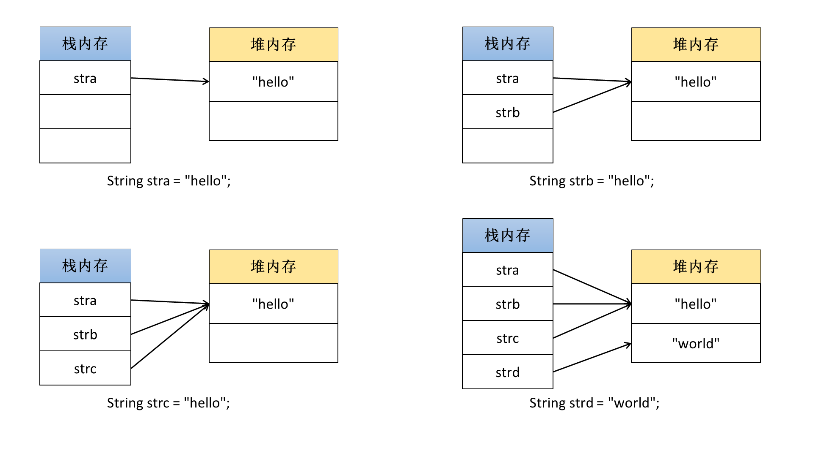
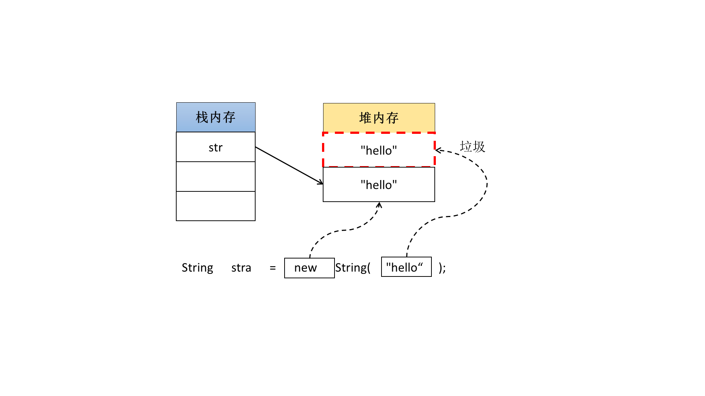
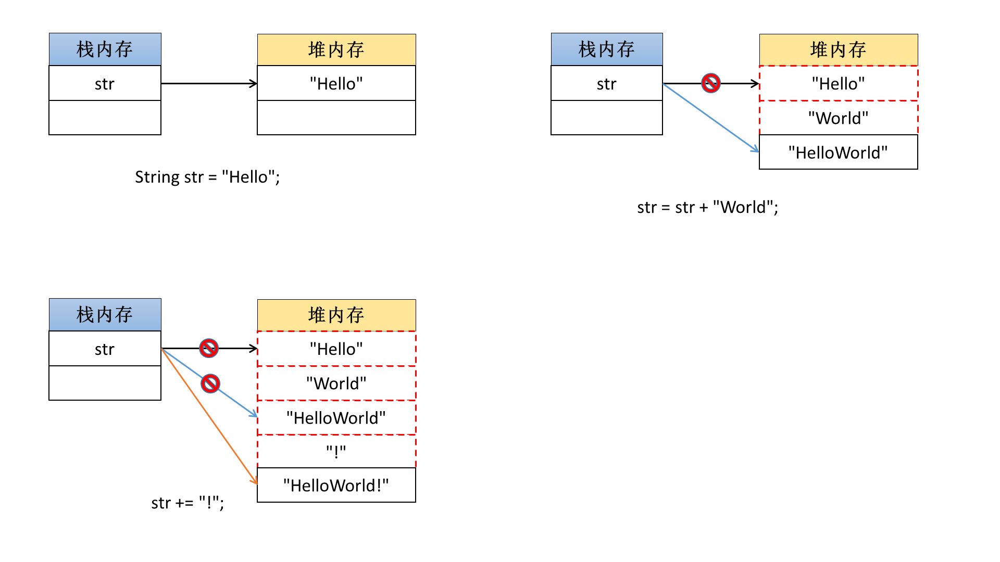

String类的基本概念
String是一个字符串类型的类，使用“ " ”定义的内容都是字符串，但是String本身毕竟是一个类，虽然这个类在使用上会有一些特殊，但是我们必须从类的角度与内存关系上来分析这个类的作用。
String类的两种实例化方式
在之前使用过String，最早的时候是直接采用了“String 变量 = "字符串";”语法形式完成的。这种形式称为直接赋值。
public class MainClass {
public static void main(String[] args) {
String str = "Hello World !"; //直接赋值
System.out.println(str);
}
}
以上就是String对象的直接赋值，代码并没有使用关键字new进行内存空间的开辟。在String类里面实际上也定义有一个构造方法：
- 构造方法：public String(String str)，在构造里面依然要接收一个本类对象；
范例： 利用构造方法实例化
public class MainClass {
public static void main(String[] args) {
String str = new String("Hello World !");
System.out.println(str);
}
}
String类有两种形式，主观上会认为第二种构造方法的形式更加适合我们，因为只要是类就应该使用new来创造对象，这样的做法似乎是最合理的。
字符串的比较
如果现在有两个int型整数想要判断其是否相等，可以使用“ == ”符号进行判断。
范例： 判断两个int型整数是否相等
public class MainClass {
public static void main(String[] args) {
int x = 10;
int y = 10;
System.out.println(x == y);
}
}
但是需要知道的是在String上也可以使用“ == ”比较，那么比较的结果如何呢？
范例： 在String中使用“ == ”判断
public class MainClass {
public static void main(String[] args) {
String stra = "hello";
String strb = new String("hello");
String strc = strb; //引用传递
System.out.println(stra == strb); //false
System.out.println(stra == strc); //false
System.out.println(strb == strc); //true
}
}
以上三个String类对象的内容完全一样，既然完全一样，那么结果应该是true，可实际的代码显示这样的结果并不是正确的。下边通过内存关系进行分析。

通过以上的分析结果可以发现，“ == ”现在确实是进行了比较，但是比较的并不是字符串包含的内容，而是字符串实例对象所在的内存地址的数值，所以“ == ”是属于数值比较，比较的是内存地址。
如果想要去比较字符串的内容，那么可以使用String类里面定义的方法：
- 比较内容：public boolean equals(String str);
范例： 实现内容比较
public class MainClass {
public static void main(String[] args) {
String stra = "hello";
String strb = new String("hello");
String strc = strb; //引用传递
System.out.println(stra.equals(strb)); //true
System.out.println(stra.equals(strc)); //true
System.out.println(strb.equals(strc)); //true
}
}
此时实现了字符串内容的比较，所以在以后的开发之中，只要是进行字符串的相等判断，千万不要使用“ == ”完成。
面试题：请解释在字符串相等的判断中“ == ”与“ equals()”的区别？
- “ == ”是Java提供的关系运算符，主要的功能是进行数值相等判断的，如果用在了String对象上表示的是内存地址数值的比较；
- “ equals() ”是String提供的一个方法，由于进行字符串内容的比较。
字符串常量就是String的匿名对象
实际上任何的语言都没有提供字符串这一概念，很多的语言里面都是使用了字符数组来描述的字符串的概念。在Java里面也没有字符串的概念。但是所有的开发都不可能离开字符串的应用，那么最终的结果是，Java自己创造了字符串。但是这个字符串依然不属于基本数据类型，它是将字符串作为了String类的匿名对象的形式存在的。
范例： 观察字符串是匿名对象的验证
public class MainClass {
public static void main(String[] args) {
String str = "hello";
System.out.println("hello".equals(str));
}
}
那么所谓的直接赋值实际上就相当于将一个匿名对象设置了一个名字而已，但唯一的区别是，String类的匿名对象是由系统自动生成的，不再由用户自己直接创建。
Tip：为了避免空指向异常的出现，可以将字符串写在前面调用方法
观察问题：
public class MainClass {
public static void main(String[] args) {
String input = null; //假设这个字符串由用户来输入
//当用户输入的值为"hello"是满足一些条件
if (input.equals("hello")) {
System.out.println("Hello World !");
}
}
}
此时由于用户的输入错误导致input的内容为空，而后又利用input调用了equals()方法，那么一定会出现“NullPointerException”异常，但是如果此时换个方式。
public class MainClass {
public static void main(String[] args) {
String input = null; //假设这个字符串由用户来输入
//当用户输入的值为"hello"是满足一些条件
if ("hello".equals(input)) {
System.out.println("Hello World !");
}
}
}
如果将操作倒过来使用，永远不可能出现空指向异常。
在以后的开发中，如果需要判断输入的内容是否是某一字符串，一定要将该字符串写在equals的前面。
两种实例化方式的区别
前面学习了String的两种实例化方式，但是这两种实例化方式有什么区别，实际开发过程中又该使用哪种实例化方式。
1、分析直接赋值
直接赋值就是将一个字符串的匿名对象设置了一个名字。
//String 变量 = 字符串常量（匿名对象）
String str = "hello";
此时在内存中会开辟一块堆内存，并且由一块栈内存指向此堆内存。但是使用直接赋值还需要多观察一下。
public class MainClass {
public static void main(String[] args) {
//String 变量 = 字符串常量（匿名对象）
String stra = "hello";
String strb = "hello";
String strc = "hello";
String strd = "whold";
System.out.println(stra == strb); //true
System.out.println(stra == strc); //true
System.out.println(strb == strc); //true
System.out.println(stra == strd); //false
}
}
发现以上的最终结果是所有采用直接赋值的String类对象的内存地址完全相同，也就是说stra、strb、strc所指向的堆内存空间是同一块。
共享设计模式
在JVM的底层实际上会存在有一个对象池（不一定只保存String对象），当代码中使用了直接赋值的形式实现了一个String类对象时，会将此字符串对象所使用的的匿名对象入池保存，而后如果后续还有其他String类对象也采用了直接赋值的方式，并且设置了同样内容的时候，那么将不会开辟新的堆内存空间，而是使用已有的对象进行引用的分配，从而继续使用。
2、采用构造方法实例化
如果要使用构造方法就一定要使用关键字new，那么也一定会开辟新的堆内存空间。
String str = new String("hello");

通过内存分析可以发现，如果使用的是构造方法的方式进行String类对象实例化的时候，那么最终的操作形式就变成了开辟两块堆内存空间（其中有一块堆内存空间将成为垃圾空间）。
除了浪费空间之外，如果使用了构造方法定义的String类对象，其内容不会保存在对象池之中，因为是使用的关键字new开辟的新内存。如果希望开辟的新内存数据也可以进行对象池的保存，那么可以采用String类定义的一个手工入池的方法：public String intern();
范例： 手工入池
public class MainClass {
public static void main(String[] args) {
//使用构造方法定义了新的内存空间，而后入池
String stra = new String("hello").intern();
String strb = "hello";
System.out.println(stra == strb);
}
}
面试题：请解释String类对象两种实例化方式的区别？
- 直接赋值（String str = "字符串"）：只会开辟一块堆内存空间，并且会自动保存在对象池中以共下次重复使用；
- 构造方法（String str = new String("字符串")）：会开辟两块堆内存空间，其中有一块空间将成为垃圾，并且不会自动入池，但是用户可以使用intern()方法手工入池。
字符串一旦定义则不可改变
观察以下代码。
public class MainClass {
public static void main(String[] args) {
String str = "Hello";
str = str + "World";
str += "!";
System.out.println(str);
}
}
以上代码最终的结果实际上发现str对象的内容被改变了，但是下面通过内存关系分析一下到底是怎么改变的。

以上的操作可以发现，所谓的字符串内容实际上根本就没有改变（Java就定义好了String的内容不能改变），而对于字符串对象内容的改变，是利用了引用关系的变化而实现得，但是每一次的变化都会产生垃圾空间。
范例： 观察以下代码
public class MainClass {
public static void main(String[] args) {
String str = "";
for (int i = 0; i < 1000; i ++) {
str += i;
}
System.out.println(str);
}
}
以上的代码修改了String对象的引用关系1000次，并且会产生大量的垃圾空间，在开发之中是被严格禁止使用的，String的内容不要过多频繁的修改。
总结
String类的特点：
- String类对象的相等判断使用equals()方法完成，“ == ”实现的是地址数值的比较；
- 字符串内容一旦声明则不可改变，String类对象内容的改变是依靠引用关系的改变实现的；
- String类有两种实例化方式，使用直接赋值可以不产生垃圾空间，并且可以自动入池，不要使用构造方法完成。